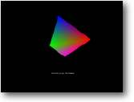

Aim: To edit a mesh's vertices in realtime
Skill level: Intermediate
Files Needed: vertex.bb | plane.3ds
If you've already read the section on Meshes beforehand then hopefully you'll know most of what we will be doing already in this tutorial, if not - go away and read it first !.
let's recap:
So, armed with that info - you should know what makes a 3d object tick !.
Lets take a flat square as an example, it is made up of 4 vertexes and 2
triangles. What we are planning of doing is to take 2 of those vertexes and
change their coordinates.
Infact as mentioned in the Introduction to Meshes, we can even change the colour of the vertexes in realtime too. Run the example - what you can hopefully see is a square object (which is slowly spinning on the Z plane), being pulled out of shape in 2 corners - while every-so-often the colours change.
It's a very easy effect to create, I wont go into great detail about how/why the program works - but here's a quick rundown if your interested:
We setup the variable 'COUNTER', which does exactly that.. to be used as a counter. Every time the program runs through its main loop, it is incremented. Based on what value the counter is equal to, corresponds to what direction we should pull the vertexes. If the counter reaches 1000 then change the colour of each vertex to a random selection, before resetting the counter value.
Let's take a look:
Graphics3D 800,600
SetBuffer BackBuffer()
camera=CreateCamera()
CameraViewport camera,0,0,800,600
light=CreateLight()
plane=LoadMesh("plane.3ds")
PositionEntity plane,0,0,25
EntityFX plane,2
surface=GetSurface(plane,CountSurfaces(plane))
VertexColor surface,0,255,0,0
VertexColor surface,1,0,255,0
VertexColor surface,2,0,0,255
VertexColor surface,3,255,0,255
While Not KeyHit(1)
TurnEntity plane,0,0,.3
counter=counter+1
If counter<500 Then
x1#=-.01
y1#=-.01
x2#=+.01
EndIf
If counter>499 Then
x1#=+.01
y1#=+.01
x2#=-.01
EndIf
xx#=VertexX(surface,0)
yy#=VertexY(surface,0)
zz#=VertexZ(surface,0)
VertexCoords surface,0,xx+x1,yy+y1,zz
xx#=VertexX(surface,2)
yy#=VertexY(surface,2)
zz#=VertexZ(surface,2)
VertexCoords surface,2,xx+x2,yy+y1,zz
If counter=1000 Then
counter=0
VertexColor surface,0,Rnd#(0,255),Rnd#(0,255),Rnd#(0,255)
VertexColor surface,1,Rnd#(0,255),Rnd#(0,255),Rnd#(0,255)
VertexColor surface,2,Rnd#(0,255),Rnd#(0,255),Rnd#(0,255)
VertexColor surface,3,Rnd#(0,255),Rnd#(0,255),Rnd#(0,255)
EndIf
UpdateWorld
RenderWorld
Text 350,500,"Vertex Control"
Flip
Wend
End
So how do we get at the vertexes of the object ?
Well for starters we load the object with the LoadMesh command, the object we are loading is of course called Plane.3ds.
EntityFX plane,2
Now here's a new command we haven't seen before !, this command is really more of mode switch than anything else. But setting values we can access the entity in different ways. the mode value '2' is to able vertex colouring on the whole entity, by default this is turned off.
Here's those mode settings:
|
1 = Full-Bright 2 = Use Vertex Colours 4 = Flatshading 8 = Disable Fog |
There is another command very similar to EntitiyFX called BRUSHFX. This uses the same mode settings, but instead of changing the whole entity will work on a single brush. (remember a mesh has surfaces, with brushes applied to them)
surface=GetSurface(plane,CountSurfaces(plane))
In order to get at the vertexes we must first unlock them, we do this by creating a pointer variable that holds the memory address to the surfaces on the mesh.
Calm down !, we don't have to get our hands dirty calling with lots of nasty math's - instead we just use the GETSURFACE command, which likes us to pass firstly the mesh name - and secondly the amount of surfaces it has. As you can see I've cheated and used the COUNTSURFACES command to do this for me.
VertexColor surface,0,255,0,0
VertexColor surface,1,0,255,0
VertexColor surface,2,0,0,255
VertexColor surface,3,255,0,255
Before going into the main loop, I've set the colour of each vertex to a different colour. This gives us a nice rainbow effect !. As you can see we pass the pointer variable SURFACE to the VERTEXCOLOR command, as well as the vertex number (0-3, since our object only has 4 points) - followed by the colour values for the Red, Green and Blue shades. (must be in the range of 0 (Dark) through to 255 (Light))
xx#=VertexX(surface,0)
yy#=VertexY(surface,0)
zz#=VertexZ(surface,0)
Since I want the coordinates of the mesh to change all the time, I cant set it with a value that doesn't change. Every update I've got to get the current coordinates and slightly update them (by adding an offset to the X and Y coords).
I do this by firstly, getting the current X,Y and Z vertex coords - using the various get vertex commands.
VertexX(surface,0) - gives us access to the X coordinate of the object surface, at vertex 0.
Just as, VertexY(surface,99) - would give us access to the Y coodinate of vertex 99 !!!.
VertexCoords surface,0,xx+x1,yy+y1,zz
As you've probably worked out by now, this is the main instruction for changing the actual Vertex positions. It needs to be called with the Surface pointer value, followed by the new values for the X, Y and Z positions.
And that's all there is to it !!
But why would you want to change the coordinates ?
All games will alter their objects, its just a case of working out how, and where they do it. Imagine you've just written a driving simulation.. wouldn't it be nice when you crash the car to reflect the damage ?. Perhaps crumple that fender.. or crack that window.
Just like a certain other car game currently in the charts, they use exactly the same method. You gotta hand it to B3D - You want it.. it's there, now go and use it wisely!